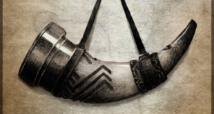

Forja do Ornn
Localizada no coração de Freljord a Forja viva traz para o mercado o que há de melhor para o sua proteção pessoal. Fundada por Ornn, o mais antigo dos semi-deuses, a Forja do Ornn já é destaque na região e conquista novos clientes a cada dia.
Nossa missão é: "Proporcionar ferramentas para a proteção dos menos providos de massa muscular".
Ferreiros como Doran e o próprio Ornn estão preparados para forjar um aço que até mesmo Valhir sentiria.
Nosso estabelecimento
Nosso estabelecimento está localizado no coração de Freljord
Benefícios
- Melhor aço de Freljord
- Espaço aconchegante
- Feito na hora
- Vem quentinho
- Faz até um churrasquinho
Criador
Alisson Mayer Medeji